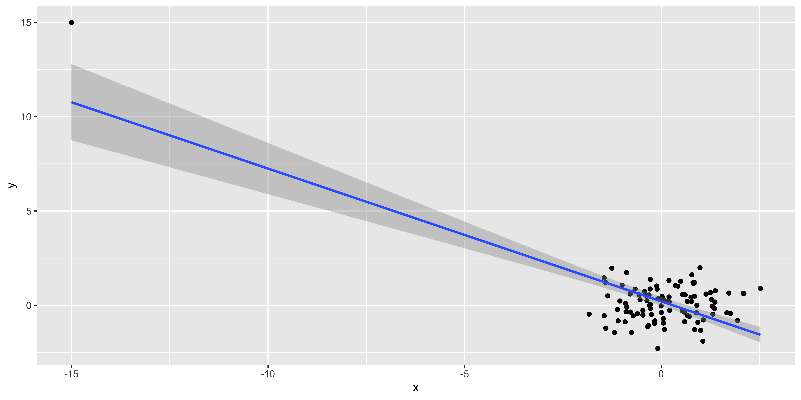

Binomial test.
If we have two possible categories (e.g., “pass”/“fail,” “female”/“male,” etc.), we can use the Binomial test to see if their proportions deviate from some null hypothesis proportion. We talked about this via problem via sampling, but that served to explain the logic, rather than provide practical advice. We also talked about this in the advanced notes going from probability to statistics via the binomial, but that section was broad, mathy and complicated. Here let’s just be practical.
If you have binary categorical data:
df = data.frame(sex = sample(c('male', 'female'), size = 50, replace = T, prob = c(0.6, 0.4)))
table(df$sex)##
## female male
## 22 28And we want to know if the rates of one outcome deviate from some null hypothesis probability
H0.p.female = 0.52We can run a binomial test:
binom.test(x=sum(df$sex=="female"), # number of one of two outcomes.
nrow(df), # total number of observations
p = H0.p.female) # probability of that outcome under the null##
## Exact binomial test
##
## data: sum(df$sex == "female") and nrow(df)
## number of successes = 22, number of trials = 50, p-value = 0.2618
## alternative hypothesis: true probability of success is not equal to 0.52
## 95 percent confidence interval:
## 0.2999072 0.5874559
## sample estimates:
## probability of success
## 0.44Thus we test the null hypothesis that our counts deviate from some null probability, using the Binomial distribution.
Estimating proportions.
If we have some categorical observations, generally we will want to report the proportion of different outcomes. How do we estimate this proportion and put confidence intervals on it?
I think it’s useful to learn the confidence interval defined by the Normal approximation to the binomial proportion (although there are many other alternatives).
If I flip \(n\) coins and get \(k\) heads, my estimated probability that we will get heads is \(\hat p = k/n\).
The standard error of \(\hat p\) will be \(s_{\hat p}=\sqrt{\hat p (1-\hat p) / n}\)
If our sample size (\(n\)) is large, and \(p\) is not too close to 0 or 1, \(\hat p\) will follow a normal distribution with standard deviation equal to the standard error of \(\hat p\). Consequently, we can use z-scores to put confidence intervals on \(p\):
\[\hat p \pm z_{\alpha/2} \sqrt{\frac{1}{n} \hat p (1-\hat p)}\]
This Z-score based confidence interval on a proportion is sufficient for most purposes.
It is fairly easy to calculate in R:
k.women = 14
n.people = 23
p.hat = k.women/n.people
q = 0.95 # 95% confidence interval
se.p.hat = sqrt(p.hat*(1-p.hat)/n.people)
z.crit = abs(qnorm((1-q)/2))
(CI.p.hat = p.hat + c(-1,1)*z.crit*se.p.hat)## [1] 0.4092422 0.8081491There are many suggested intervals for the binomial proportion, and the binom.test gives you a different interval than the one calculated via the normal approximation (it uses Clopper & Pearson).
The interval based on the Normal distribution seems the easiest to use quickly for rough calculations, so it seems more useful to know exactly.
Sign test, test for percentiles
The binomial test is also useful to test for a specific quantile (usually the median), in numerical data.
Let’s say we have some weird looking data on changes in performance (delta):
df = data.frame(delta = c(-1000, rnorm(20,1.5,1)))
ggplot(df, aes(x=delta))+geom_histogram()+my_theme
Note that the crazy outlier makes us unable to detect that improvement is actually positive:
t.test(df$delta, mu=0)##
## One Sample t-test
##
## data: df$delta
## t = -0.96728, df = 20, p-value = 0.345
## alternative hypothesis: true mean is not equal to 0
## 95 percent confidence interval:
## -145.62094 53.35413
## sample estimates:
## mean of x
## -46.1334Testing for the mean, using the standard deviation is very sensitive to outliers. Testing for the median, on the other hand, is not.
We can test to see if the median is 0 by calculating the proportion of improvement scores that are greater than 0. If 0 is really the median, this should be about half. Thus we have a binomial test situation: what proportion of scores are greater than zero, compared to the null distribution of them being binomially distributed with probability 0.5
binom.test(x=sum(df$delta > 0), # number greater than null median
n=sum(df$delta != 0), # number that are not equal to zero -- should be all
p=0.5) # null distribution of fraction of data that should be above the mean.##
## Exact binomial test
##
## data: sum(df$delta > 0) and sum(df$delta != 0)
## number of successes = 18, number of trials = 21, p-value = 0.00149
## alternative hypothesis: true probability of success is not equal to 0.5
## 95 percent confidence interval:
## 0.636576 0.969511
## sample estimates:
## probability of success
## 0.8571429Note that we count as the possible total number all values that are not equal to the hypothetical median. Generally, with continuous data, you will never get numbers exactly equal to the null median, but if you do, you should not count them as being either above or below the median (thus they get dropped from the binomial test analysis).
This use of a binomial test for a particular percentile is often called a sign test, and can be generalized to test for percentiles other than the median (e.g., the 75th percentile), although I never see them used that way.